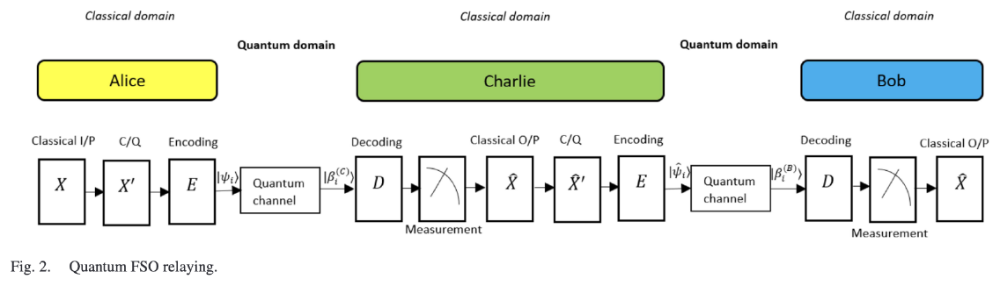
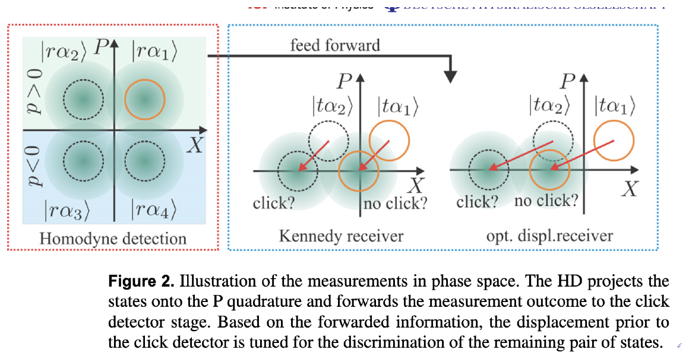
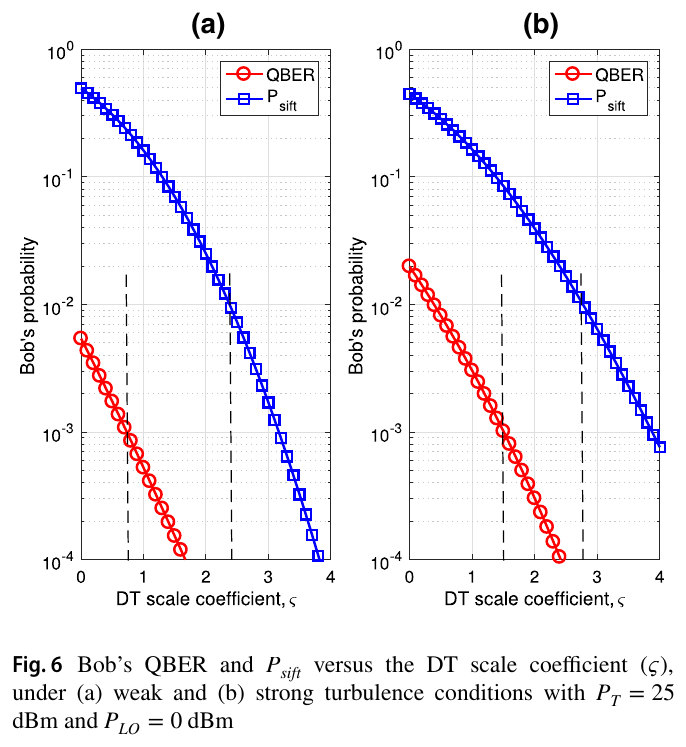
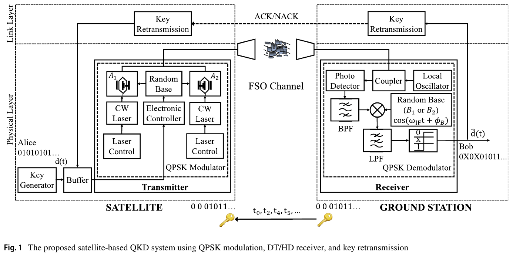
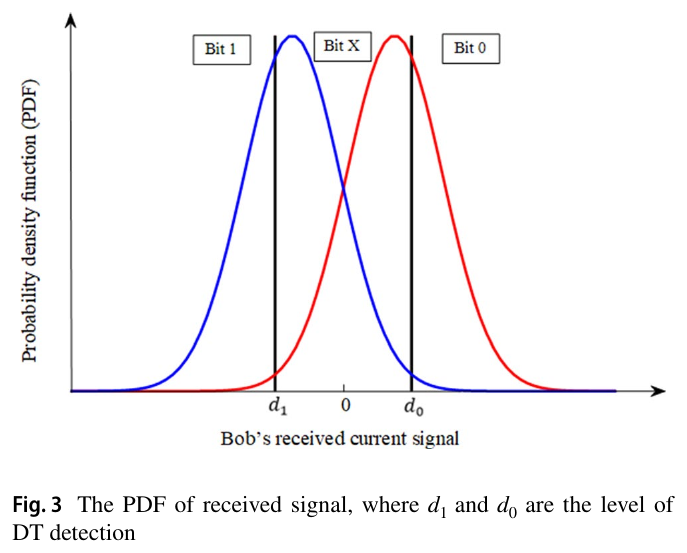
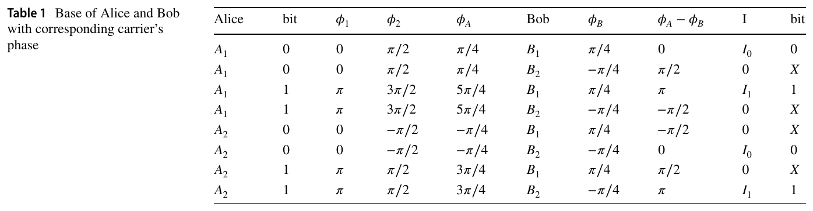
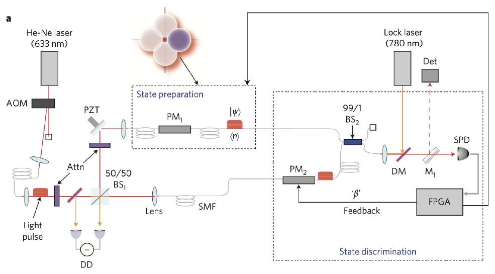
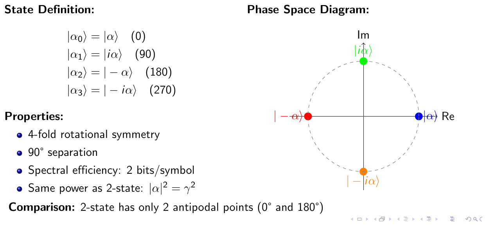
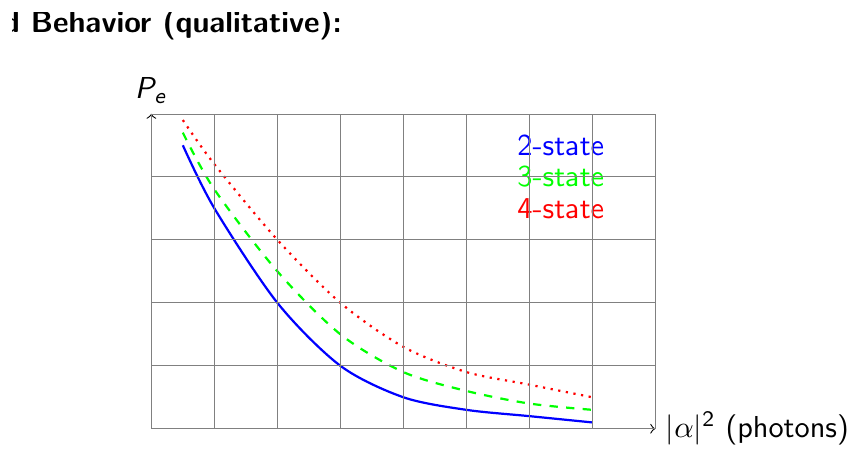

Module 18 · Kho lưu trữ: báo cáo, slide và tham khảo của lab
Chọn tài liệu có giá trị, tính lại số liệu và đánh dấu bản trùng
- Phân loại tài liệu trong kho thành bản dùng được, bản trùng và bản trích
- Mô tả kiến trúc surrogate và đầu Cholesky trong slide thiết kế
- Tính lại số trong slide cũ và phát hiện chỗ không khớp
- Phân biệt decode-and-forward với amplify-and-forward
- Nối kho với các module m03, m13, m14 và m19
📚 Tài liệu nguồn của module (đã xác minh bằng nội dung từng file)
| File trong kho | Bài báo (đã xác minh bằng nội dung) | Trang | Trạng thái | Đã dùng vào module |
|---|---|---|---|---|
| misc/11221733_DuongPhuongGiang_thesis_v3_4trang_quan_trong.pdf | Physics-Constrained Neural Surrogates for Helstrom Error Computation in Quantum Free-Space Optical Channels Duong Phuong Giang · 2026 · NEU, 5-2026 | 4 | Đọc một phần (sách dài) | Bản trích 4 trang: tóm tắt. |
| misc/Design-architecture-Updated-8-3.pdf | Neural Surrogate for Quantum FSO Channel Duong Phuong Giang · 2026 · slide 24-3-2026 | 20 | Đã đọc, khớp tên bài | Tr. 2 đến 20: hai approach, dữ liệu, kiến trúc, loss. |
| misc/12_NEW_PAPERS/Approximation_Methods/2510.21238v1.pdf | Physics-Informed Neural Networks for MIMO Beam Map and Environment Reconstruction W. Chen, J. Chen, S. Cui · 2025 · arXiv:2510.21238 | 13 | Đọc một phần (sách dài) | Chỉ đọc tóm tắt. |
| misc/12_NEW_PAPERS/Approximation_Methods/2507.22513v1.pdf | PINN and GNN-based RF Map Construction for Wireless Communication Systems L. Liu, X. Chen, và cs. · 2025 · arXiv:2507.22513 | 6 | Đọc một phần (sách dài) | Chỉ đọc tóm tắt. |
| misc/12_NEW_PAPERS/PINN/07_Karpatne_Anuj_AGU_2018_workshop.pdf | Physics-guided Machine Learning: Opportunities in Combining Physical Knowledge with Data Science for Weather and Climate Sciences A. Karpatne · 2018 · slide AGU workshop | 23 | Đọc một phần (sách dài) | Tr. 1 đến 4: khung theory-guided data science. |
| misc/12_NEW_PAPERS/PINN/62_Physics_Informed_Neural_Net.pdf | Physics-Informed Neural Networks for Wireless Channel Estimation with Limited Pilot Signals S. A. Javid, N. González-Prelcic · 2025 · arXiv | 17 | Đọc một phần (sách dài) | Chỉ đọc tóm tắt. |
| misc/12_NEW_PAPERS/Quantum_Discrimination/Mironowicz_2024_J._Phys._A__Math._Theor._57_163002.pdf | Semi-definite programming and quantum information P. Mironowicz · 2024 · J. Phys. A 57, 163002 | 94 | Đọc một phần (sách dài) | Tóm tắt, mục lục, Phụ lục B.3 (tr. 73 và 74). |
| misc/12_NEW_PAPERS/Quantum_Discrimination/symmetry-14-00874.pdf | Direct Parameter Estimations from Machine Learning-Enhanced Quantum State Tomography H.-Y. Hsieh, J. Ning, và cs. · 2022 · Symmetry 14(5), 874 | 10 | Đọc một phần (sách dài) | Chỉ đọc tóm tắt. |
| misc/09_ARCHIVE_old/misc/C785A765BB490B0C1EE0F8B8100_DD9B46CD_32A19D.pdf | Introductory Quantum Optics C. Gerry, P. Knight · 2005 · Cambridge University Press | 333 | Đọc một phần (sách dài) | Mục lục và chương 3 (tr. 43 đến 44); Eq. (3.2). |
| misc/09_ARCHIVE_old/misc/main.pdf | Quantum M-ary State Discrimination for FSO Communication Trương Tuấn Nghĩa · 2026 · slide 15-1-2026 | 66 | Đã đọc, khớp tên bài | Tr. 7 đến 40. Trùng hoặc cũ hơn bản khác; không tính là nguồn độc lập. |
| 06_CODE_OLD/22-1-2026/Quantum_FSO_Bilingual_Detailed.pdf | Complete Formula Reference: Quantum Relay-Assisted FSO (bilingual) Truong Tuan Nghia · 2026 · tài liệu 2-1-2026 | 32 | Đã đọc, khớp tên bài | Bản song ngữ của tài liệu công thức. |
| 06_CODE_OLD/22-1-2026/Quantum_FSO_Relay_Formulas_Explained.pdf | Complete Formula Reference: Quantum Relay-Assisted FSO (three-level) Truong Tuan Nghia · 2025 · tài liệu 30-12-2025 | 25 | Đã đọc, khớp tên bài | Eq. 1 đến 43 giải thích ba mức. |
| old_notebooks/06B_SAMPLE_CODE/HỌC 39166_Reliability_Improvement_.pdf | Reliability improvement of satellite-based quantum key distribution systems using retransmission scheme N. D. Nguyen, H. T. T. Phan, và cs. · 2021 · Photonic Netw. Commun. | 13 | Đã đọc, khớp tên bài | Fig. 1, 3, 6, Table 1, 3, Eq. 15 đến 19. |
| old_notebooks/06B_SAMPLE_CODE/presentation_vi_full.pdf | Cải thiện độ tin cậy hệ thống QKD vệ tinh sử dụng cơ chế truyền lại (slide tiếng Việt) Trương Tuấn Nghĩa · 2025 · slide 1-2025 | 34 | Đọc một phần (sách dài) | Chỉ đọc mục lục và thông tin bài. |
| old_slides_presentations/13_SLIDES_REPORTS/slide27_2.pdf | Beyond Closed-Form: Physics-Constrained Learning for Quantum FSO Error Prediction Quantum AI Lab · 2026 · slide | 25 | Đã đọc, khớp tên bài | Tr. 3 đến 22: ràng buộc C1 đến C4, regularizer. |
| old_slides_presentations/13_SLIDES_REPORTS/slides8_3.pdf | Neural Surrogate for Quantum FSO Channel (8-3-2026) Duong Phuong Giang · 2026 · slide 8-3-2026 | 14 | Đọc một phần (sách dài) | Bản cũ của deck thiết kế 24-3. Trùng hoặc cũ hơn bản khác; không tính là nguồn độc lập. |
| old_slides_presentations/04_SLIDES_PRESENTATIONS/Meeting_15Jan2026_Lab_Introduction/Quantum_AI_Lab_Introduction.pdf | Quantum AI Lab: Quantum Communication Research Project Quantum AI Lab · 2026 · slide 18-1-2026 | 28 | Đã đọc, khớp tên bài | Tr. 9, 10, 13, 22. |
| old_slides_presentations/04_SLIDES_PRESENTATIONS/Meeting_18Jan2026_Quantum_AI_Lab/main.pdf | Quantum M-ary State Discrimination for FSO Communication (copy) Trương Tuấn Nghĩa · 2026 · slide | 65 | Đọc một phần (sách dài) | Trùng hoặc cũ hơn bản khác; không tính là nguồn độc lập. |
| old_slides_presentations/04_SLIDES_PRESENTATIONS/Meeting_18Jan2026_Quantum_AI_Lab/PRESENTATION_SCRIPT_15MIN.pdf | Script trình bày 15 phút Trương Tuấn Nghĩa · 2026 · script | 7 | Đã đọc, khớp tên bài | Toàn bộ 7 trang. |
Bài giảng (slide)
Dùng phím ← → hoặc nút bấm; nút ⛶ để trình chiếu toàn màn hình.
Trạng thái coherent trong giáo trình quang học lượng tử
- \(\alpha\in\mathbb C\)biên độ phức, mã hoá biên độ và pha
- \(\bar n=|\alpha|^2\)số photon trung bình
- \(P(n)\)Poisson, trung bình và phương sai đều bằng \(\bar n\)
Giáo trình Gerry và Knight (2005) là sách 333 trang trong kho; chương 3 (tr. 43 đến 73) được đọc cho module này.
Cận Helstrom và lỗi BPSK trong slide của lab
- \(|\psi_0\rangle=|{+}\gamma\rangle,\ |\psi_1\rangle=|{-}\gamma\rangle\)hai trạng thái BPSK
- \(\gamma^2=\bar n\)số photon trung bình
| \(\bar n\) | 0.25 | 0.5 | 1 | 2 |
|---|---|---|---|---|
| \(e^{-4\bar n}\) | 0.3679 | 0.1353 | 0.01832 | 3.355e-04 |
| \(P_e\) | 0.1025 | 0.03506 | 0.0046 | 8.387e-05 |
Slide được đánh giá "CORRECT, 5/5" cho các bước này (tr. 7 của deck 66 trang); các số trong bảng trên được tính lại bằng code.
Kênh Gamma-Gamma trong slide M-ary của lab
- \(k=2\pi/\lambda\)số sóng
- \(C_n^2\)cường độ nhiễu loạn khí quyển
Ví dụ \(C_n^2=5\cdot10^{-14}\), \(\lambda=1{,}55\,\mu\)m, \(L=1200\) m: \(\sigma_R^2=1.391\), dạng chuẩn cho \(\alpha=4.091\), \(\beta=2.071\).
Relay hai chặng trong sơ đồ của lab

Nguồn: Quantum AI Lab Introduction, slide 18-1-2026, tr. 9
- \(P_{e,1},P_{e,2}\)lỗi từng chặng
Chòm sao trạng thái và các kiểu máy thu

Nguồn: Quantum AI Lab Introduction, slide 18-1-2026, tr. 13 (hình trích trong deck)
Dòng thời gian của kho lưu trữ: bài báo, slide, code
Học trạng thái hay học thẳng xác suất lỗi
- \(x=(|\alpha|,\sigma,L,C_n^2,\lambda)\)5 tham số kênh đầu vào
| Tiêu chí | Approach 1 | Approach 2 |
|---|---|---|
| Đầu ra | \(2d^2\) | \(1\) |
| Giải thích vật lý | có trạng thái | không |
| Dữ liệu nhãn | đắt | rẻ |
Sinh dữ liệu: trung bình trạng thái qua kênh
- \(I\sim\mathrm{GG}(\alpha_{GG},\beta_{GG})\)cường độ Gamma-Gamma
- \(\eta\sim\mathcal N(0,\sigma^2)\)nhiễu cộng
| \(N\) | 100 | 10 000 | 1 000 000 |
|---|---|---|---|
| sai số tương đối ~ | 0.1 | 0.01 | 0.001 |
Helstrom bằng quy hoạch bán xác định
- \(\Pi_i\)phần tử POVM
Slide báo "10 đến 100 ms mỗi lần giải với n_max = 20". Con số 85,24 ms/mẫu của dự án lấy từ thí nghiệm riêng, không từ slide này.
Kiến trúc mạng: từ đặc trưng vật lý đến xương sống MLP
- \(k=2\pi/\lambda\)đặc trưng suy ra
- \(\mathrm{SiLU}\)hàm kích hoạt
| Khối | Tham số |
|---|---|
| Xương sống \(9\to\dots\to256\) | 116608 |
| Hai đầu \(256\to d^2\), \(d=16\) | 131584 |
| Tổng | \(248192\) |
Đầu Cholesky và tính hợp lệ theo cấu trúc
- \(\rho_i\succeq0\)bán xác định dương theo cấu trúc
- \(\operatorname{Tr}\rho_i=1\)chuẩn hoá vết
Ví dụ \(L=\begin{pmatrix}1&0\\2&3\end{pmatrix}\): \(LL^{\top}=\begin{pmatrix}1&2\\2&13\end{pmatrix}\), vết \(14\), \(\rho=\tfrac1{14}LL^{\top}\) có trị riêng \(0.04825\) và \(0.9518\) (cùng dương, tổng 1).
Hàm mất mát: trạng thái cộng nhất quán Helstrom
Đầu Cholesky khiến ba số hạng này bằng 0 theo cấu trúc, nên không cần phạt; đó là lý do phiên bản sau bỏ chúng.
Ví dụ số: lỗi chính xác và xấp xỉ theo biên độ
| \(a\) | \(P_e\) | \(\tilde P_e\) | lệch (%) |
|---|---|---|---|
| 0.3 | 0.2251 | 0.1744 | -22.5 |
| 0.5 | 0.1025 | 0.09197 | -10.2 |
| 1.0 | 0.0046 | 0.004579 | -0.46 |
| 2.0 | 2.813e-08 | 2.813e-08 | -2.78e-06 |
Ví dụ số: lớp quyết định Helstrom của surrogate
- \(\lambda_k\)trị riêng của \(\tfrac12(\rho_1-\rho_0)\)
Ví dụ số: surrogate nhanh gấp hơn 700 lần SDP
- \(85.24,\ 0.118\)ms mỗi mẫu cho SDP và surrogate, theo tài liệu dự án (CLAUDE.md)
| Phần | MAC |
|---|---|
| Xương sống | 115831 |
| Hai đầu Cholesky | 131072 |
| Tổng | 246912 |
Ví dụ số: chênh 20 dB công suất trong QKD vệ tinh

Nguồn: Nguyen, Phan, Pham, Mai, Dang, Photonic Netw. Commun., 2021, Fig. 6, tr. 9
- \(P_T\)công suất phát đỉnh: 25 dBm cho QPSK-DT/HD, 45 dBm cho SIM/BPSK-DT
Ví dụ số: nhiễu shot chi phối máy thu heterodyne
Với \(\bar g=10,x=0{,}8,\Re=0{,}8,P_{LO}=1\) mW (0 dBm), \(P_R\) bỏ qua, \(I_d=3\) nA, \(\Delta f=R_b/2=5\) GHz: nhiễu shot \(8.076e-10\) A\(^2\), nhiễu nhiệt \(1.645e-12\) A\(^2\), \(\sigma_n=2.84e-05\) A. Nhiễu shot chiếm ưu thế (hơn 99%).
Ví dụ số: các phạt Hermiticity, vết và dương tính
Ma trận không đối xứng (0,1 so với 0,2) và có vết \(1{,}1\); phần đối xứng hoá có trị riêng \(0.3379\) và \(0.7621\) nên phạt dương tính bằng 0.
Bảng sai số xấp xỉ trong slide không tái lập được
| \(a\) | in: chính xác | in: xấp xỉ | tính lại: chính xác | tính lại: xấp xỉ |
|---|---|---|---|---|
| 0.3 | 0.268 | 0.21 | 0.225 | 0.174 |
| 0.5 | 0.067 | 0.068 | 0.102 | 0.092 |
| 1.0 | 0.001 | 0.001 | 0.0046 | 0.00458 |
| 2.0 | 1.70e-07 | 1.70e-07 | 2.81e-08 | 2.81e-08 |
Slide giới thiệu mâu thuẫn về giao thức relay
Nguồn: Quantum AI Lab Introduction, slide 18-1-2026, tr. 9
Hệ số mũ trong công thức alpha: cảnh báo của slide và phép tính lại
| Dạng | \(\alpha\) |
|---|---|
| chuẩn \(\sigma_R^{12/5}\) | 4.091 |
| lũy thừa 1 | 3.417 |
| lệch (%) | -16.5 |
Tài liệu trùng lặp trong kho
| Cặp file | J | Kết luận |
|---|---|---|
| main.pdf (66 tr.) / Meeting_18Jan main.pdf (65 tr.) | 0.974 | trùng: cùng deck, bản sau thêm nhãn đánh giá |
| Design-architecture (20 tr.) / slides8_3 (14 tr.) | 0.736 | bản cũ và bản cập nhật |
| Formulas_Explained (25 tr.) / Bilingual_Detailed (32 tr.) | 0.416 | cùng nguồn, bố cục khác: giữ cả hai |
Điều kiện hiệu lực và các hệ số không có nguồn đo
File thiếu, bản trích và bản trùng trong kho
- README của 22-1-2026 liệt kê "Đọc và tái lập Quantum_Relay-Assisted ....pdf" nhưng file này không có trong thư mục.
- Bản luận văn chỉ là bản trích 4 trang (tên file ghi "4trang_quan_trong"): chỉ có bìa, lời cam đoan, lời cảm ơn và tóm tắt.
- Thư mục CODE_REPO_GIANG_OLD_DUPLICATE ghi rõ là bản trùng; không dùng làm nguồn.
Ghi chú dự án (CLAUDE.md): đường ống dữ liệu cũ sinh trạng thái trước kênh; checkpoint của bài báo hiện tại dùng cầu phương nên không mắc lỗi này.
QKD vệ tinh với cơ chế truyền lại khoá

Nguồn: Nguyen, Phan, Pham, Mai, Dang, Photonic Netw. Commun., 2021, Fig. 1, tr. 3
Quyết định hai ngưỡng: đổi lỗi lấy tốc độ khoá

Nguồn: Nguyen, Phan, Pham, Mai, Dang, Photonic Netw. Commun., 2021, Fig. 3, tr. 6
Cơ sở QPSK, bit X và phép tính QBER

Nguồn: Nguyen, Phan, Pham, Mai, Dang, Photonic Netw. Commun., 2021, Table 1, tr. 3
Từ cận Helstrom đến máy thu thực nghiệm

Nguồn: Quantum AI Lab Introduction, slide 18-1-2026, tr. 22 (hình thực nghiệm trích trong deck)
Học máy dẫn bởi vật lý và hai approach của lab
- Mô hình theo lý thuyết có khoảng trống tri thức; mô hình dữ liệu cần nhiều mẫu; kết hợp cả hai là hướng "theory-guided data science".
- Slide 27-2 dùng ý này theo hai cách: phạt ràng buộc (Approach 1) và điều chuẩn biên và đơn điệu cho P_e (Approach 2).
- Biên: \(P_e\to0.5\) khi tín hiệu biến mất, đúng với \(\tfrac12(1-\sqrt{1-e^{-4\bar n}})\) khi \(\bar n\to0\).
Đánh đổi giữa số trạng thái và lỗi

Nguồn: Trương Tuấn Nghĩa, Quantum M-ary State Discrimination for FSO (slide 15-1-2026), tr. 20

Nguồn: Trương Tuấn Nghĩa, Quantum M-ary State Discrimination for FSO (slide 15-1-2026), tr. 40
Case thật: khung SDP chuẩn cho nhiều trạng thái
Phụ lục B.3 của tổng quan 94 trang mô tả phân biệt N trạng thái không trực giao: chọn các toán tử đo \(M_i\) để cực đại hoá xác suất thành công trung bình, kèm ví dụ YALMIP với ba trạng thái 3 chiều.
\[ P_{\mathrm{succ}}=\frac1N\sum_{i=1}^{N}\operatorname{Tr}(\rho_iM_i),\quad M_i\succeq0,\ \ \sum_iM_i=I,\qquad P_e=1-P_{\mathrm{succ}} \]Tổng kết: dùng kho lưu trữ như thế nào
- Đọc đầy đủ: slide thiết kế 24-3-2026, deck giới thiệu lab, deck M-ary, QKD vệ tinh, hai tài liệu công thức.
- Đọc một phần: sách Gerry và Knight (chương 3), tổng quan Mironowicz (Phụ lục B.3), bài PINN.
- Trùng hoặc cũ: main.pdf hai bản, slides8_3, thư mục CODE_REPO_GIANG_OLD_DUPLICATE.
Nội dung chi tiết
Bối cảnh lý thuyết và lịch sử
Kho E_ARCHIVE giữ các slide, báo cáo và code cũ từ giai đoạn 12-2025 đến 5-2026 của lab: công thức của bài relay Bhatnagar (2025), deck mở rộng M-ary (15-1-2026), deck giới thiệu lab (18-1-2026), hai deck thiết kế surrogate (8-3 và 24-3-2026) và bản trích luận văn. Các bài tham khảo kèm theo gồm QKD vệ tinh (Nguyen và cs., 2021), PINN cho truyền thông không dây, ML cho tomography trạng thái và tổng quan SDP của Mironowicz (2024).
Nói nôm na, kỹ thuật, bảng, phép tính
Nôm na: kho là hộp tài liệu cũ; có bản tốt, bản trùng và chỗ sai. Kỹ thuật: đọc từng file, tính lại số, đối chiếu công thức in. Bảng: độ trùng Jaccard và bảng sai số tính lại ở các slide. Phép tính: các ví dụ dưới.
\(P_e=\tfrac12(1-\sqrt{1-e^{-2}})=0.03506\), xấp xỉ \(\tfrac14e^{-2}=0.03383\), lệch -3.51%.
Xương sống \(9\to128\to128\to256\to256\) có 116608 tham số, hai đầu \(256\to256\) có 131584, tổng 248192; một lần suy luận cần 246912 MAC.
Với Table 3 và \(P_{LO}=1\) mW: nhiễu shot \(8.076e-10\) A\(^2\) so với nhiệt \(1.645e-12\) A\(^2\), tỉ số 491.
\(C_n^2=5\cdot10^{-14}\), \(L=1200\) m, \(\lambda=1{,}55\,\mu\)m cho \(\sigma_R^2=1.391\); nếu \(L\) gấp đôi, \(\sigma_R^2\) nhân \(2^{11/6}=3.564\) thành \(4.955\).
Jaccard của hai bản main.pdf là 0.974, của hai deck thiết kế 0.736, của hai tài liệu công thức 0.416. Ngưỡng 0,9 trở lên được coi là trùng (giả định).
Để sai số tương đối \(10^{-3}\) cần \(N=10^6\) mẫu; để sai số \(10^{-4}\) cần \(10^8\) mẫu, gấp 100 lần.
Slide main.pdf tr. 16 ghi \(P_e=0{,}268\) ở \(a=0{,}3\); công thức ngay trên slide cho 0.2251. Sai lệch do không rõ cách tính, nên số này không được trích.
Bẫy khi làm bài
- Trích số từ slide cũ mà không tính lại.
- Nhầm decode-and-forward với amplify-and-forward.
- Nhầm \(\sigma_R^{12/5}\) với \(\sigma_R^{6/5}\) hay \(\sigma_R\) trong công thức alpha.
- Đọc hai bản trùng như hai nguồn độc lập.
- Coi bản trích luận văn 4 trang là toàn bộ kết quả.
Phát hiện về thư mục nguồn
- Cả 19 PDF đọc được bằng trình trích chữ và nội dung khớp tên (không có file hỏng hay đặt nhầm). Các file khác trong kho: code Python, notebook, hình PNG, ghi chú .md, bảng .csv và .xlsx; chỉ README của 22-1-2026 và các ghi chú liên quan được xem.
- Có ba cặp trùng hoặc cũ-mới: hai main.pdf, hai deck thiết kế, hai tài liệu công thức (xem bảng nguồn).
- Bảng sai số trong main.pdf tr. 16 không khớp công thức của chính slide; deck giới thiệu tr. 10 mâu thuẫn về giao thức relay.
Tự kiểm tra nhanh
Luyện tập sâu
Mở ngân hàng 45 câu trắc nghiệm và 5 bài viết code →
Tài liệu tham khảo
- Bhatnagar, Arti, Bhatnagar, Quantum Relay-Assisted Free-Space Optical Communication, IEEE Photonics J. 17(3), 2025.
- N. D. Nguyen et al., Reliability improvement of satellite-based QKD systems using retransmission scheme, Photonic Netw. Commun., 2021.
- P. Mironowicz, Semi-definite programming and quantum information, J. Phys. A 57, 163002, 2024.
- C. Gerry, P. Knight, Introductory Quantum Optics, Cambridge Univ. Press, 2005.
- A. Karpatne, Physics-guided Machine Learning, AGU workshop slides, 2018.
- Quantum AI Lab, Design-architecture-Updated-8-3, slide, 24-3-2026.